5F
| Twin Clutch System Disassembly and Reassembly |
Disassembly
1)Remove solenoid valve unit. 
2)Remove even gear clutch control actuator.
3)Remove parking unit.
4)Remove parking cable bracket.
5)Remove gear mounting retaining bolt (1).

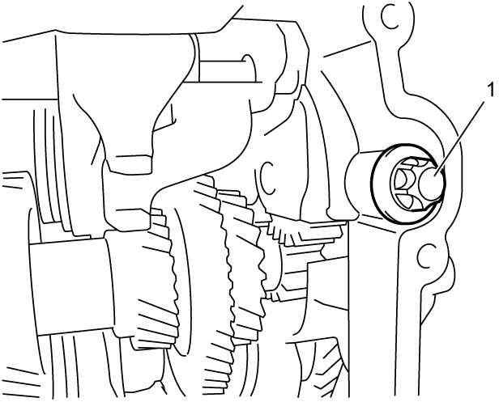
 "Expand image")
6)Remove transfer adaptor bolts (1) and remove transfer adaptor (2).
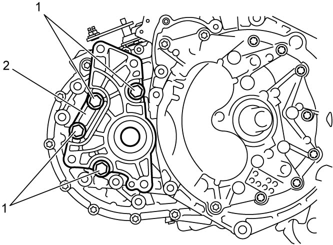
 "Expand image")
7)Remove transaxle case bolts (1).

 "Expand image")
 "Expand image")
9)Remove shift shaft (1), 1st & 3rd gear shift fork (2) and 6th gear shift fork (3) from lower countershaft (4).
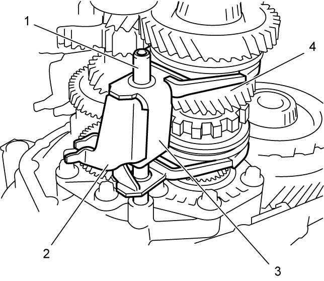
 "Expand image")
10)Remove reverse idler gear mounting (1).
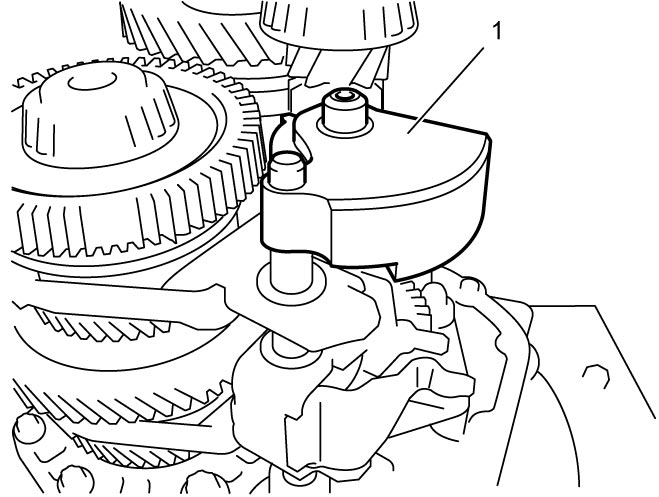
 "Expand image")
11)Remove shift shaft (1), 2nd & 4th gear shift fork (2) and 5th & reverse gear shift fork (3) from upper countershaft (4).
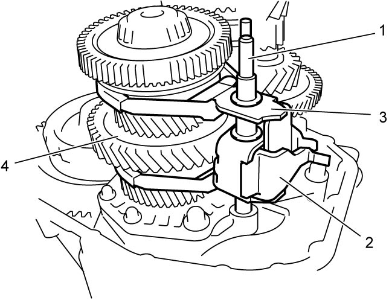
 "Expand image")
12)Remove input shaft (1) with upper countershaft (2) and lower countershaft (3).
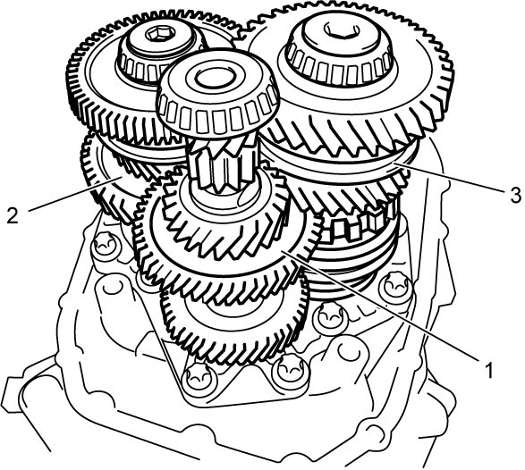
 "Expand image")
13)Remove outside input shaft oil seal (1) using flat-bladed screwdriver or the like.
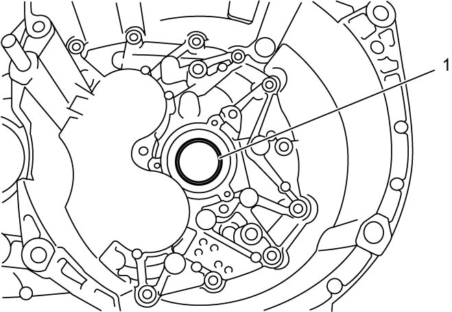
 "Expand image")
Reassembly
1)Install input shaft (1) with upper countershaft (2) and lower countershaft (3).
2)Fit 2nd & 4th gear shift fork (2) and 5th & reverse gear shift fork (3) to upper countershaft (4) and insert shift shaft (1).
3)Install reverse idler gear mounting (1).
4)Fit 1st & 3rd gear shift fork (1) and 6th gear shift fork (2) to lower countershaft (3) and insert shift shaft (4).
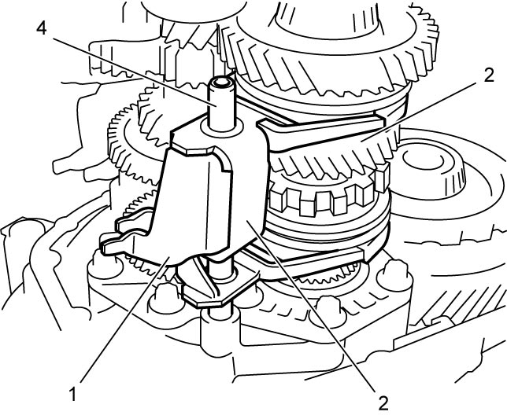
 "Expand image")
5)Set special tools (cylinders) (A) – (D) on shafts and differential (5) respectively as shown.
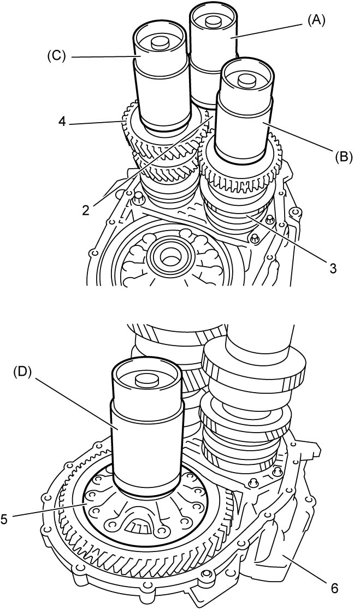
 "Expand image")
| 2. | Input shaft | 4. | Lower countershaft |
| 3. | Upper countershaft | 6. | Transaxle right case |
6)Put transaxle left case (1) on special tools.
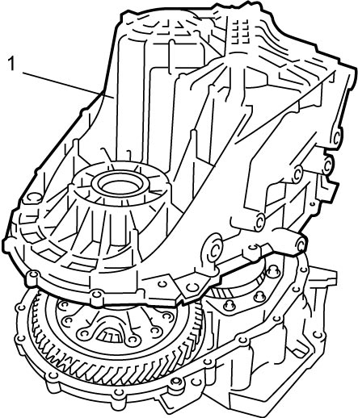
 "Expand image")
7)Set special tools (long collars) (1) between transaxle right case (3) and transaxle left case (4) and then insert special tools (through bolts) (2) into bolt holes as shown in figure.
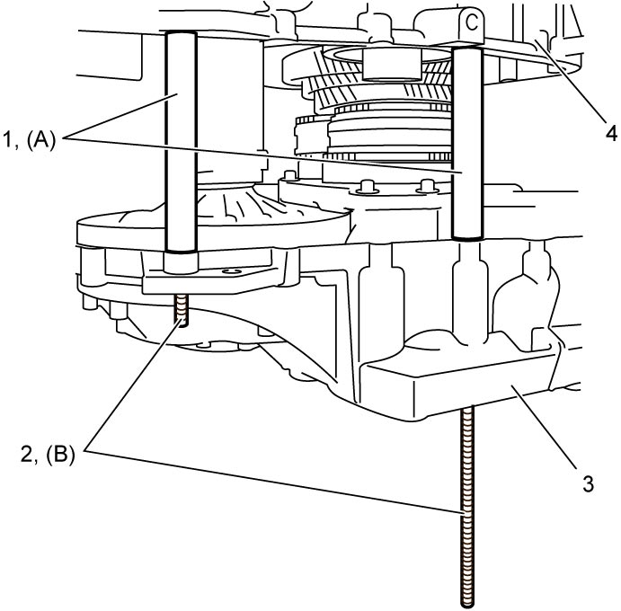
 "Expand image")
8)Set all special tools in the same manner as in Step 7) and screw each through bolt into threaded hole on flange of transaxle left case.
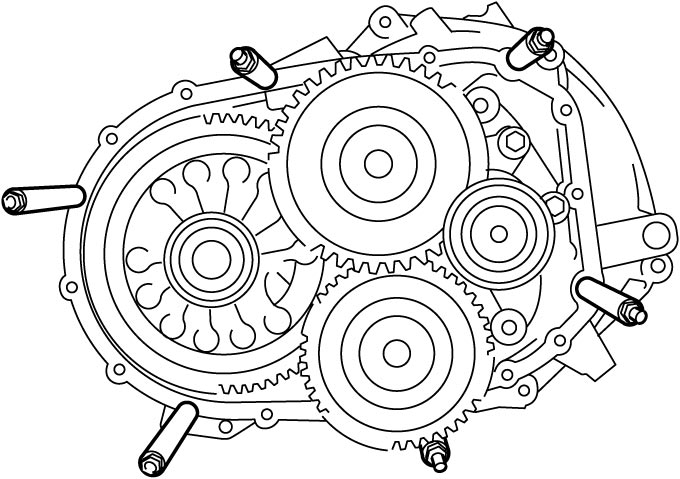
 "Expand image")
9)Put special tool (washer) on end of through bolt and tighten special tool (nut) to 15 N·m (1.5 kgf-m, 11.0 lbf-ft). Repeat the same procedure to all other through bolts.
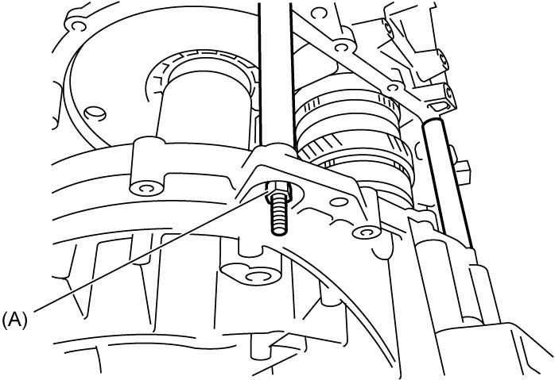
 "Expand image")
10)Shift gear to 6th position and then turn input shaft 41 rotations using special tool.
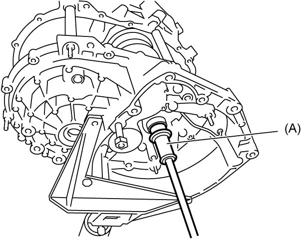
 "Expand image")
11)Select input shaft shim as follows.
a)Measure clearance “a” between two cylinders of special tool inserting feeler gauge (1) as shown.
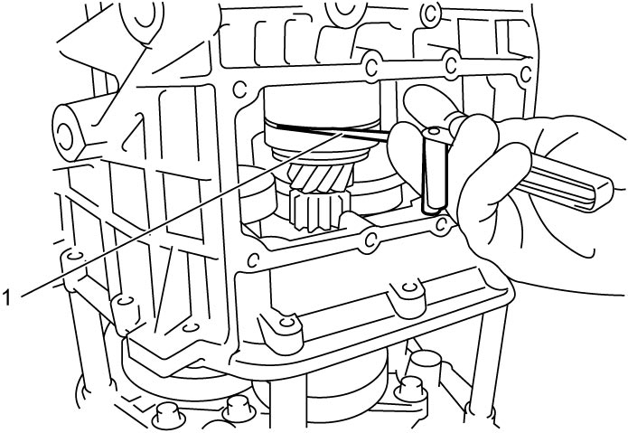
 "Expand image")
b)Calculate shim thickness “b” by the following formula.
| Shim thickness “b” = Clearance “a” + 0.19 mm (0.0075 in.) |
c)Select a shim closest to the thickness “b” from the following available sizes.
Available shim thickness
| Calculated shim thickness “b” | Applicable shim |
|---|---|
| 0.585 – 0.635 mm (0.0230 – 0.0250 in.) |
0.80 mm (0.0315 in.) |
| 0.635 – 0.685 mm (0.0250 – 0.0270 in.) |
0.85 mm (0.0335 in.) |
| 0.685 – 0.735 mm (0.0270 – 0.0289 in.) |
0.90 mm (0.0354 in.) |
| 0.735 – 0.785 mm (0.0289 – 0.0309 in.) |
0.95 mm (0.0374 in.) |
| 0.785 – 0.835 mm (0.0309 – 0.0329 in.) |
1.00 mm (0.0394 in.) |
| 0.835 – 0.885 mm (0.0329 – 0.0348 in.) |
1.05 mm (0.0413 in.) |
| 0.885 – 0.935 mm (0.0348 – 0.0368 in.) |
1.10 mm (0.0433 in.) |
| 0.935 – 0.985 mm (0.0368 – 0.0388 in.) |
1.15 mm (0.0453 in.) |
| 0.985 – 1.035 mm (0.0388 – 0.0408 in.) |
1.20 mm (0.0472 in.) |
| 1.035 – 1.085 mm (0.0408 – 0.0427 in.) |
1.25 mm (0.0492 in.) |
| 1.085 – 1.135 mm (0.0427 – 0.0447 in.) |
1.30 mm (0.0512 in.) |
| 1.135 – 1.185 mm (0.0447 – 0.0467 in.) |
1.35 mm (0.0531 in.) |
| 1.185 – 1.235 mm (0.0467 – 0.0486 in.) |
1.40 mm (0.0551 in.) |
| 1.235 – 1.285 mm (0.0486 – 0.0506 in.) |
1.45 mm (0.0571 in.) |
| 1.285 – 1.335 mm (0.0506 – 0.0526 in.) |
1.50 mm (0.0591 in.) |
| 1.335 – 1.385 mm (0.0526 – 0.0545 in.) |
1.55 mm (0.0610 in.) |
| 1.385 – 1.435 mm (0.0545 – 0.0565 in.) |
1.60 mm (0.0630 in.) |
| 1.435 – 1.485 mm (0.0565 – 0.0585 in.) |
1.65 mm (0.0650 in.) |
| 1.485 – 1.535 mm (0.0585 – 0.0604 in.) |
1.70 mm (0.0669 in.) |
| 1.535 – 1.585 mm (0.0604 – 0.0624 in.) |
1.75 mm (0.0689 in.) |
| 1.585 – 1.635 mm (0.0624 – 0.0644 in.) |
1.80 mm (0.0709 in.) |
12)Select upper countershaft shaft shim as follows.
a)Measure clearance “a” between two cylinders of special tool inserting feeler gauge (1) as shown.
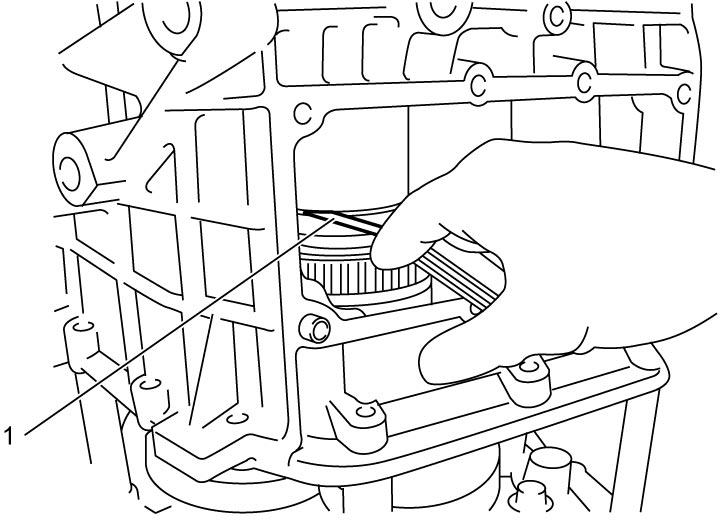
 "Expand image")
b)Calculate shim thickness “b” by the following formula.
| Shim thickness “b” = Clearance “a” + 0.15 mm (0.0059 in.) |
c)Select a shim closest to the thickness “b” from the following available sizes.
Available shim thickness
| Calculated shim thickness “b” | Applicable shim |
|---|---|
| 0.525 – 0.575 mm (0.0207 – 0.0226 in.) |
0.70 mm (0.0276 in.) |
| 0.575 – 0.625 mm (0.0226 – 0.0246 in.) |
0.75 mm (0.0295 in.) |
| 0.625 – 0.675 mm (0.0246 – 0.0266 in.) |
0.80 mm (0.0315 in.) |
| 0.675 – 0.725 mm (0.0266 – 0.0285 in.) |
0.85 mm (0.0335 in.) |
| 0.725 – 0.775 mm (0.0285 – 0.0305 in.) |
0.90 mm (0.0354 in.) |
| 0.775 – 0.825 mm (0.0305 – 0.0325 in.) |
0.95 mm (0.0374 in.) |
| 0.825 – 0.875 mm (0.0325 – 0.0344 in.) |
1.00 mm (0.0394 in.) |
| 0.875 – 0.925mm (0.0344 – 0.0364 in.) |
1.05 mm (0.0413 in.) |
| 0.925 – 0.975 mm (0.0364 – 0.0384 in.) |
1.10 mm (0.0433 in.) |
| 0.975 – 1.025 mm (0.0384 – 0.0404 in.) |
1.15 mm (0.0453 in.) |
| 1.025 – 1.075 mm (0.0404 – 0.0423 in.) |
1.20 mm (0.0472 in.) |
| 1.075 – 1.125 mm (0.0423 – 0.0443 in.) |
1.25 mm (0.0492 in.) |
| 1.125 – 1.175 mm (0.0443 – 0.0463 in.) |
1.30 mm (0.0512 in.) |
| 1.175 – 1.225 mm (0.0463 – 0.0482 in.) |
1.35 mm (0.0531 in.) |
| 1.225 – 1.275 mm (0.0482 – 0.0502 in.) |
1.40 mm (0.0551 in.) |
| 1.275 – 1.325 mm (0.0502 – 0.0522 in.) |
1.45 mm (0.0571 in.) |
| 1.325 – 1.375 mm (0.0522 – 0.0541 in.) |
1.50 mm (0.0591 in.) |
| 1.375 – 1.425 mm (0.0541 – 0.0561 in.) |
1.55 mm (0.0610 in.) |
| 1.425 – 1.475 mm (0.0561 – 0.0581 in.) |
1.60 mm (0.0630 in.) |
| 1.475 – 1.525 mm (0.0581 – 0.0600 in.) |
1.65 mm (0.0650 in.) |
| 1.525 – 1.575 mm (0.0600 – 0.0620 in.) |
1.70 mm (0.0669 in.) |
| 1.575 – 1.625 mm (0.0620 – 0.0640 in.) |
1.75 mm (0.0689 in.) |
| 1.625 – 1.675 mm (0.0640 – 0.0659 in.) |
1.80 mm (0.0709 in.) |
13)Select lower countershaft shaft shim as follows.
a)Measure clearance “a” between two cylinders of special tool inserting feeler gauge (1) as shown.
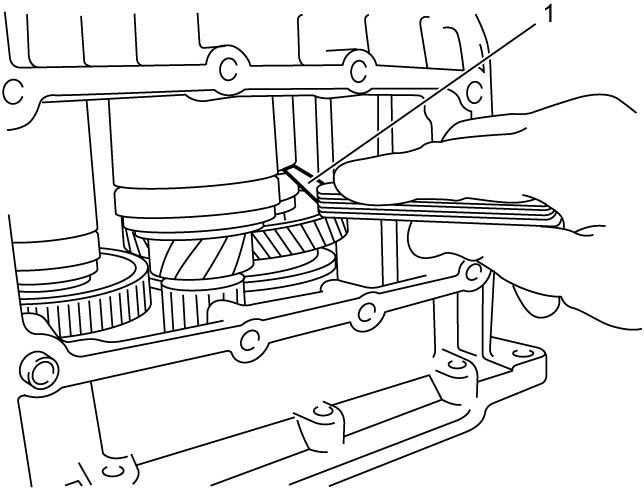
 "Expand image")
b)Calculate shim thickness “b” by the following formula.
| Shim thickness “b” = Clearance “a” + 0.13 mm (0.0051 in.) |
c)Select a shim closest to the thickness “b” from the following available sizes.
Available shim thickness
| Calculated shim thickness “b” | Applicable shim |
|---|---|
| 0.545 – 0.595 mm (0.0215 – 0.0234 in.) |
0.70 mm (0.0276 in.) |
| 0.595 – 0.645 mm (0.0234 – 0.0254 in.) |
0.75 mm (0.0295 in.) |
| 0.645 – 0.695 mm (0.0254 – 0.0274 in.) |
0.80 mm (0.0315 in.) |
| 0.695 – 0.745 mm (0.0274 – 0.2933 in.) |
0.85 mm (0.0335 in.) |
| 0.745 – 0.795 mm (0.2933 – 0.0313 in.) |
0.90 mm (0.0354 in.) |
| 0.795 – 0.845 mm (0.0313 – 0.0333 in.) |
0.95 mm (0.0374 in.) |
| 0.845 – 0.895 mm (0.0333 – 0.0352 in.) |
1.00 mm (0.0394 in.) |
| 0.895 – 0.945 mm (0.0352 – 0.0372 in.) |
1.05 mm (0.0413 in.) |
| 0.945 – 0.995 mm (0.0372 – 0.0392 in.) |
1.10 mm (0.0433 in.) |
| 0.995 – 1.045 mm (0.0392 – 0.0411 in.) |
1.15 mm (0.0453 in.) |
| 1.045 – 1.095 mm (0.0411 – 0.0431 in.) |
1.20 mm (0.0472 in.) |
| 1.095 – 1.145 mm (0.0431 – 0.0451 in.) |
1.25 mm (0.0492 in.) |
| 1.145 – 1.195 mm (0.0451 – 0.0471 in.) |
1.30 mm (0.0512 in.) |
| 1.195 – 1.245 mm (0.0471 – 0.0490 in.) |
1.35 mm (0.0531 in.) |
| 1.245 – 1.295 mm (0.0490 – 0.0510 in.) |
1.40 mm (0.0551 in.) |
| 1.295 – 1.345 mm (0.0510 – 0.0530 in.) |
1.45 mm (0.0571 in.) |
| 1.345 – 1.395 mm (0.0530 – 0.0543 in.) |
1.50 mm (0.0591 in.) |
| 1.395 – 1.445 mm (0.0543 – 0.0569 in.) |
1.55 mm (0.0610 in.) |
| 1.445 – 1.495 mm (0.0569 – 0.0589 in.) |
1.60 mm (0.0630 in.) |
| 1.495 – 1.545 mm (0.0589 – 0.0608 in.) |
1.65 mm (0.0650 in.) |
| 1.545 – 1.595 mm (0.0608 – 0.0628 in.) |
1.70 mm (0.0669 in.) |
| 1.595 – 1.645 mm (0.0628 – 0.0648 in.) |
1.75 mm (0.0689 in.) |
| 1.645 – 1.695 mm (0.0648 – 0.0667 in.) |
1.80 mm (0.0709 in.) |
14)Select differential shim as follows.
a)Measure clearance “a” between two cylinders of special tool inserting feeler gauge (1) as shown.
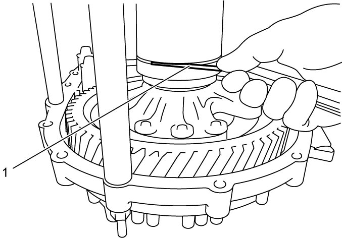
 "Expand image")
b)Calculate shim thickness “b” by the following formula.
| Shim thickness “b” = Clearance “a” + 0.054 mm (0.0021 in.) |
c)Select a shim closest to the thickness “b” from the following available sizes.
Available shim thickness
| Calculated shim thickness “b” | Applicable shim |
|---|---|
| 0.721 – 0.771 mm (0.0284 – 0.0304 in.) |
0.80 mm (0.0315 in.) |
| 0.771 – 0.821 mm (0.0304 – 0.0323 in.) |
0.85 mm (0.0335 in.) |
| 0.821 – 0.871 mm (0.0323 – 0.0343 in.) |
0.90 mm (0.0354 in.) |
| 0.871 – 0.921 mm (0.0343 – 0.0363 in.) |
0.95 mm (0.0374 in.) |
| 0.921 – 0.971 mm (0.0363 – 0.0382 in.) |
1.00 mm (0.0394 in.) |
| 0.971 – 1.021 mm (0.0382 – 0.0402 in.) |
1.05 mm (0.0413 in.) |
| 1.021 – 1.071 mm (0.0402 – 0.0422 in.) |
1.10 mm (0.0433 in.) |
| 1.071 – 1.121 mm (0.0422 – 0.0441 in.) |
1.15 mm (0.0453 in.) |
| 1.121 – 1.171 mm (0.0441 – 0.0461 in.) |
1.20 mm (0.0472 in.) |
| 1.171 – 1.221 mm (0.0461 – 0.0481 in.) |
1.25 mm (0.0492 in.) |
| 1.221 – 1.271 mm (0.0481 – 0.0500 in.) |
1.30 mm (0.0512 in.) |
| 1.271 – 1.321 mm (0.0500 – 0.0520 in.) |
1.35 mm (0.0531 in.) |
| 1.321 – 1.371 mm (0.0520 – 0.0540 in.) |
1.40 mm (0.0551 in.) |
| 1.371 – 1.421 mm (0.0540 – 0.0559 in.) |
1.45 mm (0.0571 in.) |
| 1.421 – 1.471 mm (0.0559 – 0.0579 in.) |
1.50 mm (0.0591 in.) |
| 1.471 – 1.521 mm (0.0579 – 0.0599 in.) |
1.55 mm (0.0610 in.) |
| 1.521 – 1.571 mm (0.0599 – 0.0619 in.) |
1.60 mm (0.0630 in.) |
15)Remove special tools and transaxle left case.
16)Place selected shim for each shaft and differential into transaxle left case and then install bearing outer race on the shim respectively.
17)Clean mating surfaces of both right and left cases, apply sealant to left case (1) by such amount that its section is 1.5 mm (0.059 in.) in diameter.
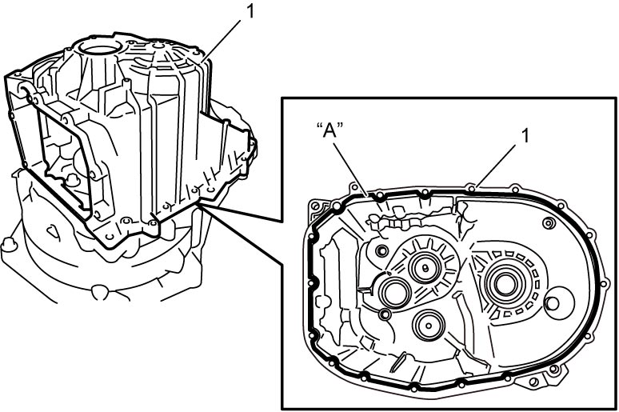
 "Expand image")
18)Within 2 minutes after applying sealant, fit transaxle left case to right case and tighten transaxle case bolts (1) to specified torque.
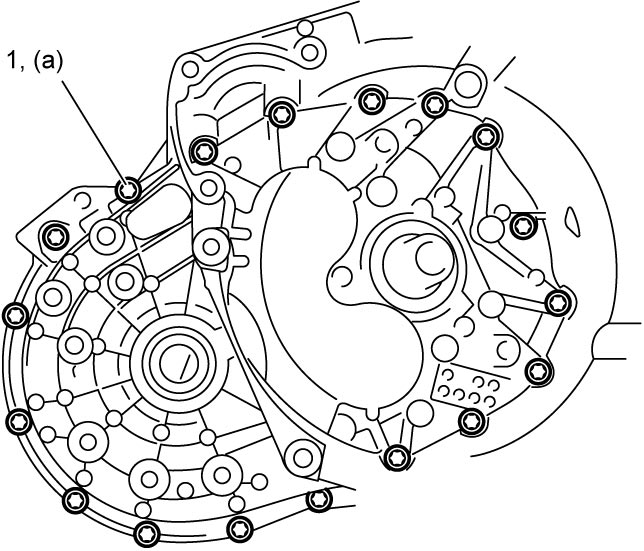
 "Expand image")
 "Expand image")
20)Apply transaxle oil to new O-ring (1) and then install O-ring to transfer adaptor (2).
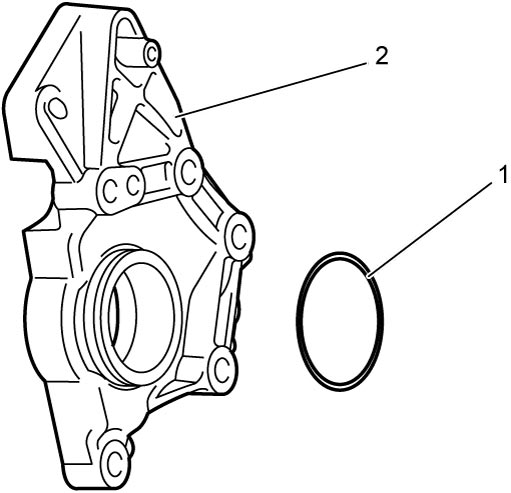
 "Expand image")
21)Install transfer adaptor (1) and tighten transfer adaptor bolts (2) to specified torque.
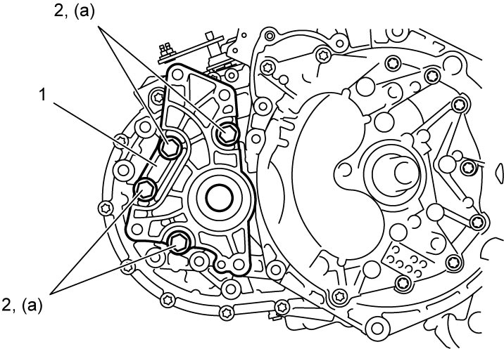
 "Expand image")
22)Install new gear mounting retaining bolt (1) and tighten it to specified torque.
NOTICE:
The gear mounting retaining bolt is pre-coated with adhesive. If the bolt is reused, they may work loose.
Use new gear mounting retaining bolt.
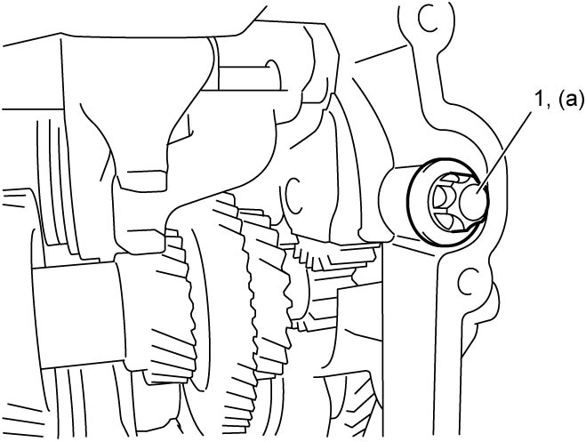
 "Expand image")
23)Install parking cable bracket.
24)Install parking unit.
25)Install even gear clutch control actuator.
26)Install solenoid valve unit.
27)After replacing transaxle inner parts, perform TCM and Clutch Initialization.